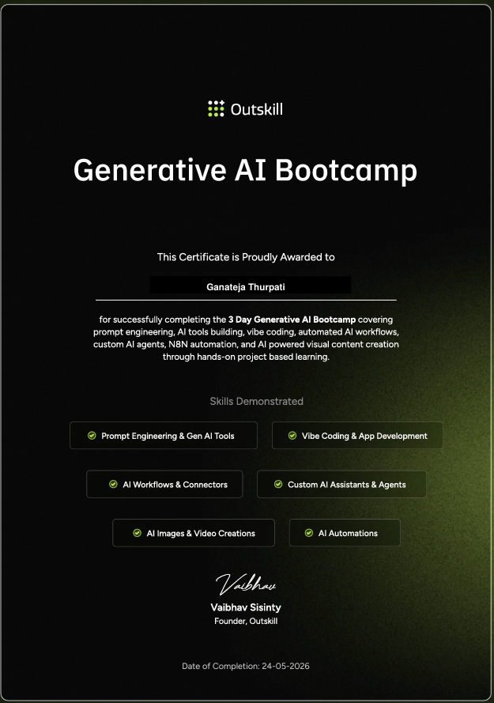
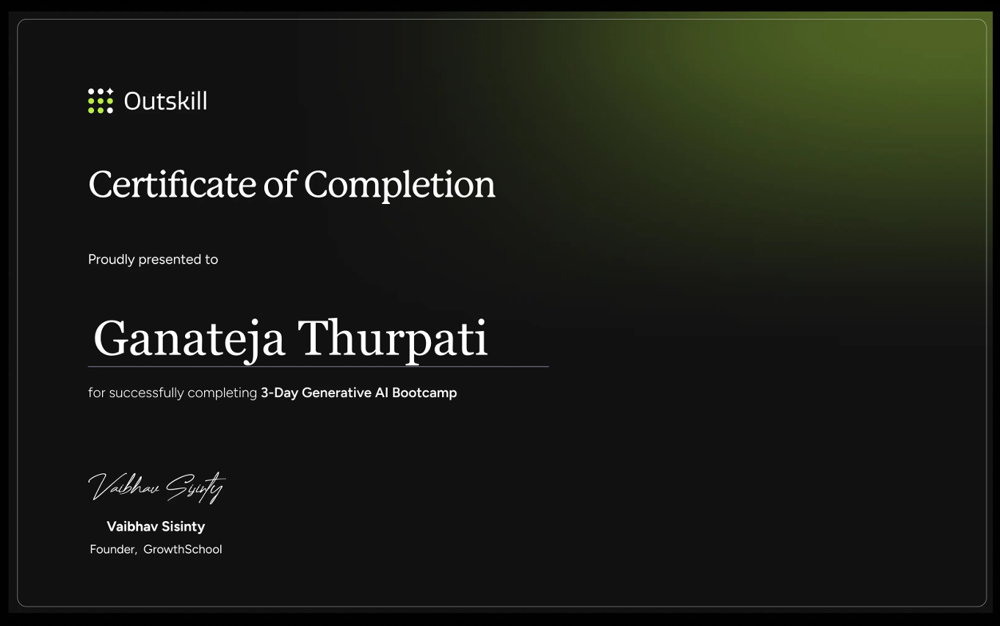

Ganateja Thurpati
Data Engineer
Building scalable data platforms that turn raw data into business value.

Who I Am
Continuous learner obsessed with data reliability and quality. I've spent 5+ years transforming raw data into actionable intelligence—whether scaling pipelines to 500GB+ daily throughput or preventing $28K in unnecessary costs through smarter architecture. I believe great data engineering isn't just about building pipelines; it's about asking the right questions, understanding business context, and designing systems that compound in value over time. Passionate about data governance, observability, and schema-first thinking. I'm always exploring emerging tools, cost optimization patterns, and real-time streaming innovations to stay ahead of the curve.
Why Data Engineering?
I'm drawn to data engineering because it sits at the intersection of architecture and impact—every pipeline I build directly shapes the decisions an organization makes.
Currently Exploring
Key Beliefs
Impact at a Glance
Featured Projects

Engineered a real-time healthcare data platform using PySpark, AWS Glue, and Kinesis, implementing medallion architecture and a centralized feature store to enable scalable analytics and ML workflows.


Designed and developed an end-to-end machine learning web application that enables real-time classification of iris flower species based on user-provided biometric measurements. This application bridges machine learning concepts with frontend delivery, showcasing the ability to translate predictive models into intuitive, business-ready tools.


Professional Journey
Data Engineer
United Healthcare Group
Led architecture for 500GB+ daily clinical data ingestion pipeline
Data Engineer
Capgemini
Managed 120+ DAGs; reduced operational overhead by $28K annually
Junior Data Engineer
Tech Mahindra
Established data quality standards achieving 99.6% SLA adherence
Technical Skills
Education
University of Memphis
Relevant Coursework:
Fundamentals of Data Science, Machine Learning, Database Systems (SQL), Data Mining, Advanced Statistical Learning, Big Data Analytics, Neural Networks, Data Visualization.
Indian Institute of Information Technology, Jabalpur
Relevant Coursework:
Data Structures & Algorithms, Probability & Statistics, Linear Algebra, Digital Signal Processing, Database Management Systems, Object-Oriented Programming, Computer Networks, Microprocessors & Interfacing.
Certifications
Supply Chain Management A-Z: Operations & Logistics
Udemy
Generative AI Bootcamp
Outskill
3-Day Generative AI Bootcamp
GrowthSchool / Outskill
AWS Certified Cloud Practitioner
Amazon Web Services
AWS Certified Machine Learning
Amazon Web Services
Generative AI Fundamentals
Databricks
Databricks Lakehouse Fundamentals
Databricks
Google Data Analytics Professional Certificate
Coursera
Lean Six Sigma Green Belt
Council for Six Sigma Certification
Verzeo Certification
VerzeoGet In Touch
I'm currently looking for new opportunities. Whether you have a question or just want to say hi, I'll try my best to get back to you!